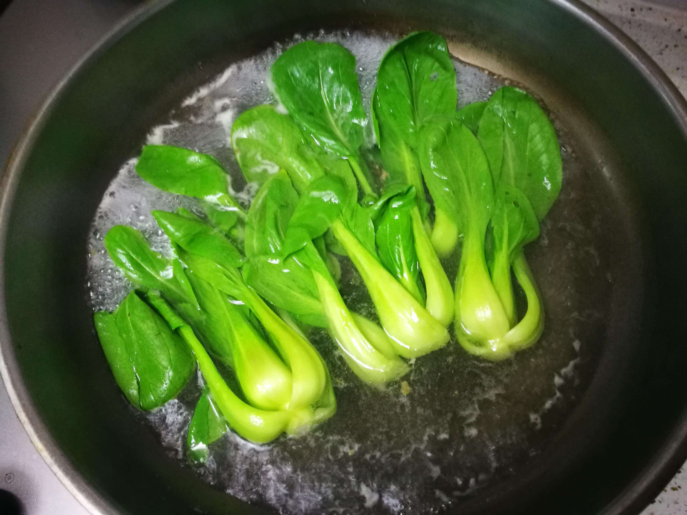

焯水是很多食材烹调前需要经历的步骤，不但有助去除异味和有害物质，还能缩短烹调时间。需要提醒大家的是，焯水不是简单地将食材放入热水中烫一下，它有很多学问，并且每类食材的操作要领也不一样。
蔬菜，放点盐，加点油。焯烫蔬菜时，其中的水溶性营养成分，如B族维生素、维生素C等会流失到水里。但如果在沸水中加点盐，蔬菜就处在细胞内外浓度相对平衡的环境中，其可溶性成分扩散到水中的速度会减慢。不过加盐切记不能太多，大半锅水加小半勺即可。此外，还可以在沸水中加两滴油，其会在蔬菜表面形成一层保护膜，起到隔绝空气的作用，有助蔬菜保持鲜亮。此外，焯蔬菜要沸水下锅，水不要太多，以刚淹没食材为宜。焯水时间不要太长，蔬菜颜色稍有变化便可以捞出来。

带毒素的菜，焯5分钟。有些菜天然含有毒素，比如四季豆含皂素和植物血凝素，做不熟的话会引起恶心、呕吐等中毒症状，建议将两头的尖和丝去掉后，沸水焯5分钟至四季豆失去原有的生绿色。鲜黄花菜中含有的秋水仙碱也会引起中毒，建议沸水焯5分钟后再炒熟炒透食用。
豆腐，凉水下锅，大火烧开转小火。豆腐烹调前用水焯一下，不仅有助去除豆腥味，还会使其更紧致，做菜时不易碎。建议将凉水和豆腐同时下锅，大火烧开后转小火，待豆腐浮到水面后捞出。
肉类，凉水喝汤，热水吃肉。肉下锅之前是否需要用沸水焯烫一下，要看肉的品质和种类，以及烹调的目标。一般来说，新鲜鸡肉无需焯烫，优质新鲜牛羊肉也不用。但是，大部分猪肉，或者质量不太满意的牛羊肉，最好先做焯烫处理，否则直接下锅可能味道不正。如果只想吃肉，热水下锅或烫久一点都可以，但如果兼要喝汤，必须冷水下锅，焯烫时间也要短，去掉血水即可。